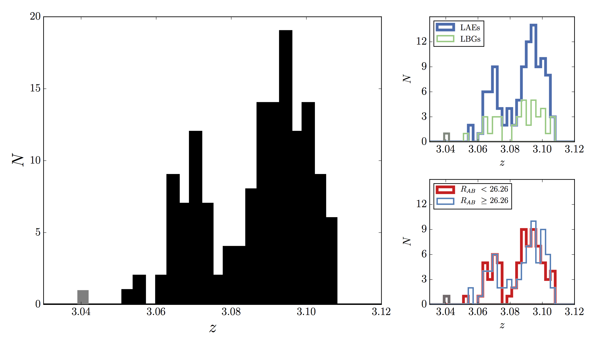

Current Research
I am currently researching the z~3.09 protocluster in the SSA22 field. Originally discovered as an overdensity of Lyman Break Galaxies, this protocluster is expected to evolve into a Coma-like cluster by z=0. New dense spectroscopy of the region has allowed us to observe two seperate structures that will potentially merge in the future.
Recent Publications
Michael W. Topping, Alice E. Shapley, & Charles C. Steidel, 2016, ApJL, 824, 11
Substructure Within the SSA22 Protocluster at Z=3.09
Michael W. Topping and J. Michael Shull 2015, ApJ, 800, 97
The Efficiency of Stellar Reionization: Effects of Rotation, Metallicity, and Initial Mass Function